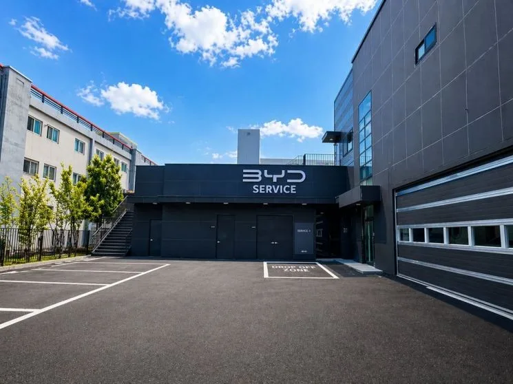
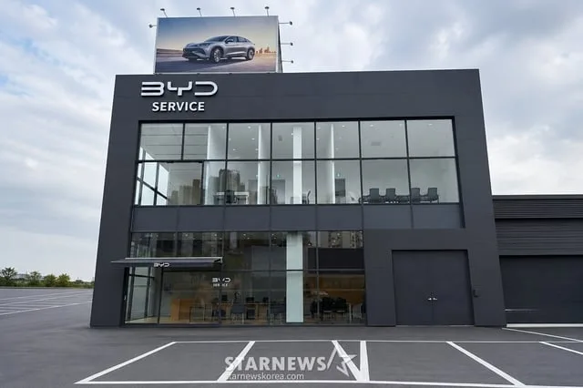
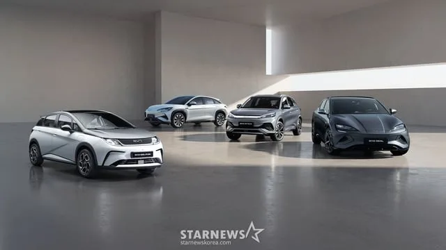
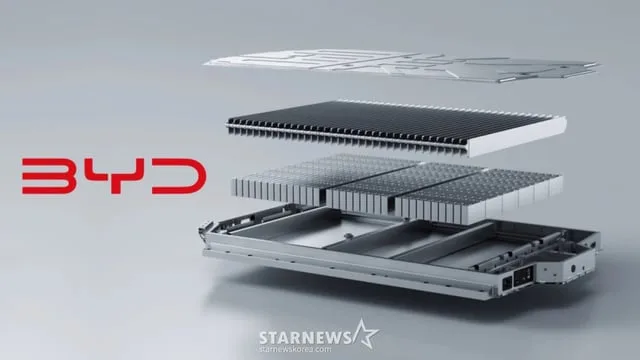

▲ BYD 서비스센터 외관. BYD코리아는 현재 전국 20곳의 서비스센터를 운영 중이며, 연말까지 26곳으로 확대할 계획이다. 사진=BYD코리아
추석 전 차량 점검, 왜 배터리부터 볼까
명절 연휴는 1년 중 자동차가 가장 혹사당하는 기간이다. 평소보다 긴 거리를 오래 달리고, 정체 구간에서 공회전과 급가속·급제동이 반복된다. 내연기관차라면 엔진오일과 냉각수, 타이어 공기압 정도가 점검 포인트였지만, 전기차는 사정이 다르다. 장거리 주행은 배터리를 지속적으로 고부하 상태로 만들고, 급속충전을 반복하면 배터리 온도 관리 시스템에도 부담이 걸린다. BYD코리아가 추석을 앞두고 내놓은 무상점검 캠페인이 동력 배터리를 첫머리에 올린 이유도 여기에 있다.
BYD코리아는 지난해 1월 국내 승용 브랜드 공식 출범 이후 씰, 돌핀, 씨라이언6·7 등 라인업을 늘려왔고, 2026년 상반기에만 1만 대가 넘는 차량을 인도했다. 인도 대수가 늘어난 만큼 첫 명절을 맞는 오너도 많아졌다는 뜻이다. 특히 전기차에 익숙하지 않은 신규 오너 입장에서는 장거리 이동 전 배터리 상태를 점검받을 수 있는 창구가 있다는 사실 자체가 안심 요소로 작용한다.
점검 기간과 대상 — 가기 전과 돌아온 후, 두 번 나눠 본다
이번 캠페인의 핵심은 '전후 6일'이라는 구성이다. BYD코리아는 추석 연휴를 기준으로 점검 시점을 둘로 나눴다.
- 사전점검: 9월 21일(월)~23일(수) — 귀성·귀경 장거리 운행에 앞서 이상 유무를 미리 확인하는 구간
- 사후점검: 9월 28일(월)~30일(수) — 연휴 기간 누적된 주행 부담을 다시 짚어보는 구간
즉 연휴를 사이에 두고 앞뒤로 3일씩, 총 6일간 전국 서비스센터에서 점검을 받을 수 있다. 대상은 BYD코리아가 판매한 전 차종으로, 별도의 차종 제한이나 연식 조건은 두지 않았다. 씰, 돌핀은 물론 씨라이언6 DM-i처럼 하이브리드 구동계를 쓰는 차량도 동일하게 점검 대상에 포함된다.
현재 BYD코리아의 서비스센터는 전국 20곳이며, 연말까지 26곳으로 확충할 계획이다. 포항·의정부 등 최근 문을 연 지역 거점들도 이번 캠페인에 동참한다.

▲ BYD코리아는 올해 들어 포항·의정부 등 지역 서비스센터를 잇달아 열며 정비 인프라를 넓히고 있다. 사진=스타뉴스
30분 안에 살피는 것들 — 배터리·하부·브레이크·소모품
점검 소요 시간은 약 30분이다. 오일 교환처럼 시간이 걸리는 정비 작업이 아니라, 장거리 운행 전후로 반드시 확인해야 할 항목만 추려 짧게 훑어보는 방식이다. BYD코리아가 밝힌 점검 범위는 크게 네 갈래다.
- 동력 배터리: 전기차의 심장에 해당하는 부분으로, 셀 상태와 배터리 관리 시스템(BMS)의 이상 유무를 확인한다. BYD가 자체 개발한 블레이드 배터리는 셀을 얇고 길게 배열해 팩 공간 효율을 높인 구조인데, 장거리·급속충전이 반복되는 명절 시즌에는 이 구조가 정상적으로 열을 관리하고 있는지 짚어보는 것이 핵심이다.
- 차량 하부: 배터리 팩을 감싸는 하부 보호 구조와 서스펜션 부싱, 각종 링크류의 체결 상태를 살핀다. 정체 구간의 요철과 방지턱을 반복해서 넘는 명절 특성상 하부 충격 누적 여부를 확인하는 항목이다.
- 브레이크: 패드 마모도와 브레이크 오일 상태를 점검한다. 전기차는 회생제동을 함께 쓰기 때문에 마모 속도가 내연기관차보다 느린 편이지만, 정체 구간에서의 잦은 저속 제동은 별도로 확인이 필요하다.
- 소모품: 와이퍼, 타이어 공기압과 마모 상태, 각종 램프류 등 장거리 운행 전 흔히 놓치기 쉬운 항목을 포함한다.
여기에 더해 실내 연무기 탈취 서비스도 제공한다. 여름철 습기와 에어컨 사용으로 눅눅해지기 쉬운 차량 실내를 명절 장거리 이동 전에 산뜻하게 정리해주는 부가 서비스다. 매장을 방문한 고객 가운데 선착순으로는 트래블 키트 기념품도 증정한다.
예약 방법 — 사전 예약이 사실상 필수
BYD코리아는 공식 홈페이지를 통한 사전 예약을 권장하고 있다. 6일이라는 한정된 기간에 전국 20개 서비스센터로 수요가 몰릴 가능성이 높은 만큼, 방문 전 예약 없이 찾아갈 경우 대기 시간이 길어질 수 있다. 예약 시에는 차종과 방문 희망 센터, 사전·사후점검 여부를 선택하면 된다.
BYD코리아 공식 홈페이지에서 서비스센터 위치와 예약 화면을 바로 확인할 수 있다. BYD코리아 공식 홈페이지에서 확인 가능 →

▲ 이번 무상점검은 씰, 돌핀, 씨라이언6·7 등 BYD코리아가 판매한 전 차종을 대상으로 한다. 사진=스타뉴스
BYD코리아의 추석 서비스 전략 — 신뢰 회복이 먼저다
이번 캠페인은 단순한 명절 이벤트로만 보기는 어렵다. BYD코리아는 최근 수리비 과다 청구, 부품 수급 지연 등 애프터서비스(AS) 관련 논란에 시달려 왔다. 9월 초에는 시간당 공임이 평균 약 11만 5,000원이라는 구체적 수치를 처음 공개하며 정면 대응에 나서기도 했다. 서비스센터 20곳, 워크베이 92개로 하루 최대 600대를 처리할 수 있다는 설명도 이 시점에 함께 나왔다.
이런 흐름 속에서 나온 추석 무상점검은 '비용 대비 정비 역량'이라는 논란의 프레임을 '선제적 안전 관리'라는 프레임으로 옮기려는 시도로 읽힌다. 실제로 회사 관계자는 "추석은 가족과 함께하는 장거리 이동이 많아 차량 관리와 점검의 중요성이 더욱 커지는 시기"라고 밝혔다. 값을 매기기 어려운 무상점검을 통해 오너들이 서비스센터를 직접 경험하게 하고, 그 경험이 곧 브랜드에 대한 신뢰로 이어지길 기대하는 셈이다.
BYD코리아 입장에서는 연말까지 서비스센터를 26곳으로 늘리겠다는 계획을 실행하는 과정에서, 이번 캠페인이 새로 문을 여는 지역 거점들의 인지도를 끌어올리는 효과도 노릴 수 있다. 국내 정착 2년 차를 맞은 BYD코리아가 판매 확대만큼이나 애프터서비스 신뢰도 확보에 무게를 싣고 있다는 신호로 볼 수 있다.

▲ BYD의 블레이드 배터리 구조. 셀을 얇고 길게 배열해 팩 공간 효율을 높인 구조로, 이번 무상점검에서도 동력 배터리 점검의 핵심 대상이다. 사진=BYD